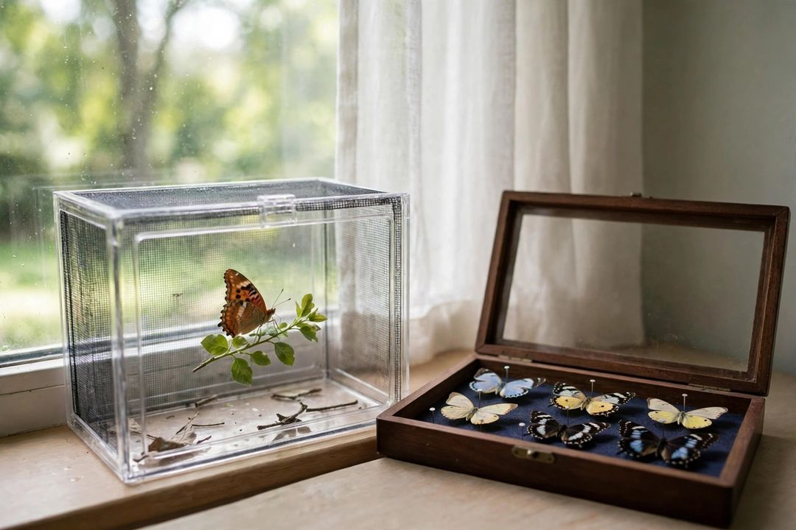

3月12日 金曜日
9:41
알고 있어도
わかっていても
카카오톡지금
박재언： ……蝶、見に行く？
카카오톡어제
박재언： 先輩、今日はありがとう
解剖メモ1시간 전
新しい解剖メモが解放されました
タップして開く
금요일
12
バーでの出会い

나비 ― 写真 解剖メモ ― パク・ジェオン解明度
心の距離：―― ／ 進行：プロローグ
BGM
ドラマOSTの公式プレビュー音源（30秒・ループ）。場面に合わせて自動で切り替わります
演出設定
メッセージの進み方
メッセージ速度
効果音
効果音量
全体ミュート（マナーモード）
触感フィードバック
チャット画面をタップすると、次のメッセージが表示されます。チャット下部の送信ボタンを長押しすると早送りモード（ON／OFF）になります。選択肢を選ぶと「解明度」と「心の距離」が変わります。解明度は彼を見抜くほど上がり、55以上で特別な結末への選択肢が開きます。効果音と生活音はすべてオリジナル合成音です（詳細は解剖メモ下部のクレジット）。
채팅
パク・ジェオン
ホンソ大 彫塑科2年
대화 상대（メンバー）
なお
채팅방（このトーク）
채팅방 알림（通知）
解明度 0心の距離 62
▼
메시지를 입력하세요
#앨범
선물하기
송금
음성메시지
연락처
파일
일정
사진 선택（写真を選ぶ）
パク・ジェオン
작업 중. 끝나지 않는 것
프로필 뮤직 ― 「Love Song」
Instagram
アクティビティ
プロフィールを編集
名前と自己紹介は、プロフィール画面にそのまま表示されます。ユーザーネームは変更できません。
NAVER뉴스
뉴스
カレンダー
2021年 3月〜10月解剖メモ
パク・ジェオン観察記録解剖メモ
詳細電話
履歴パク・ジェオン
iPhone
……
字幕をタップすると会話が進みます
미리 알림
메시지
거절응답
음소거
키패드
스피커
통화 추가
FaceTime
연락처
사진
彼視点
パク・ジェオンの内側（断片）彼視点
彼の言葉にならない側後日談
エンディングの、その先後日談
届かなかった言葉 一時停止中
メッセージを送信…
コメント
いいね！
閲覧者
投稿を送信
채팅방 배경（トークの背景）
일시
메모